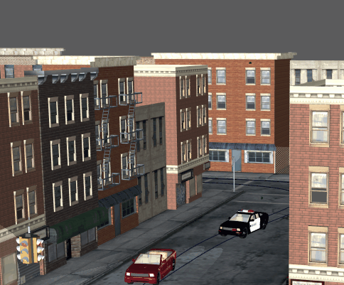
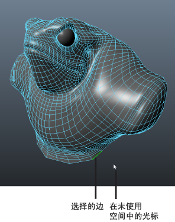

未使用空间为对象以外的空区域。当光标位于未使用空间时，仍可进行选择并调整组件。

移动对象，而不拖动操纵器
在未使用空间中选择
- （可选）激活调整模式（使用鼠标中键单击并拖动或按住热键：`）。
- 在任何变换工具（“平移”(Translate)
 、“旋转”(Rotate)
、“旋转”(Rotate) 或“缩放”(Scale)
或“缩放”(Scale) ）处于活动状态时，选择对象或组件。
）处于活动状态时，选择对象或组件。
当光标位于选择前容差内时，组件将自动亮显以供选择。请参见选择组件前亮显组件。
提示： 在“选择”(Selection)首选项中调整“选择未使用空间”(Select dead space)和“调整未使用空间”(Tweak dead space)来控制选择前容差。例如，如果“选择未使用空间”(Select dead space)设置为 10，则选择前容差为 10 个像素。如果光标在对象的 10 个像素以内，这样将亮显组件。 - 将光标放在任何对象之外，然后拖动以移动该组件。
